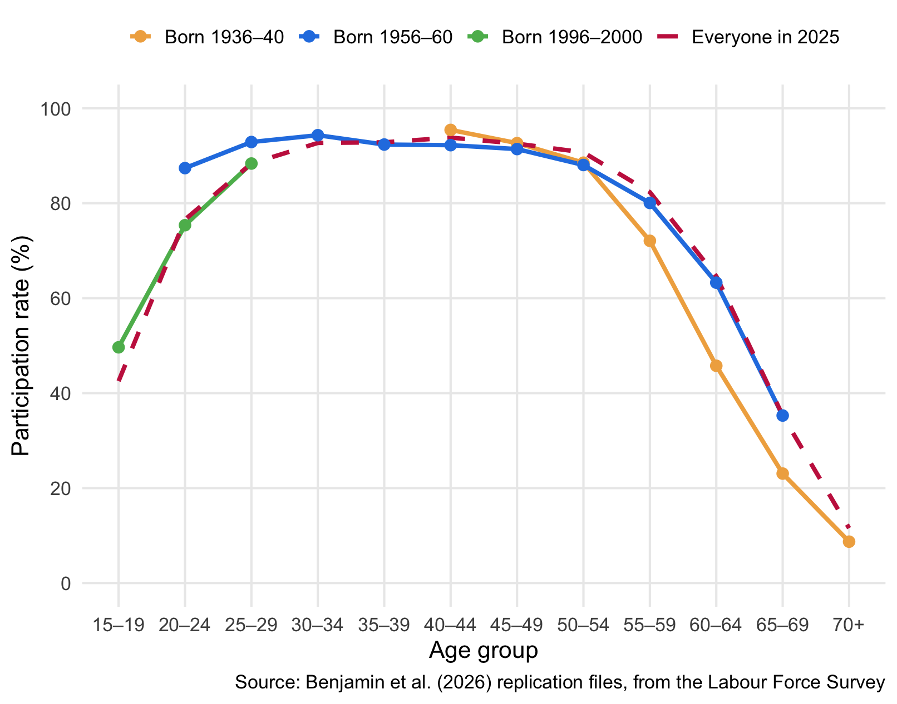
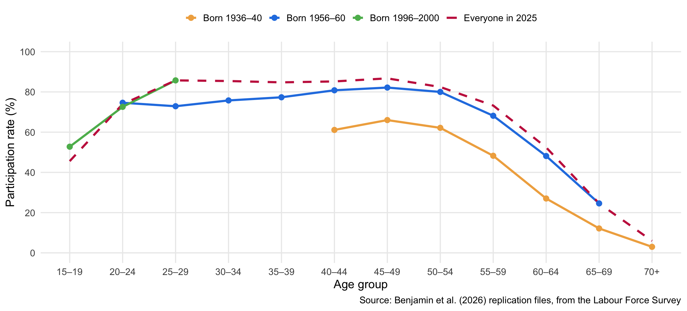
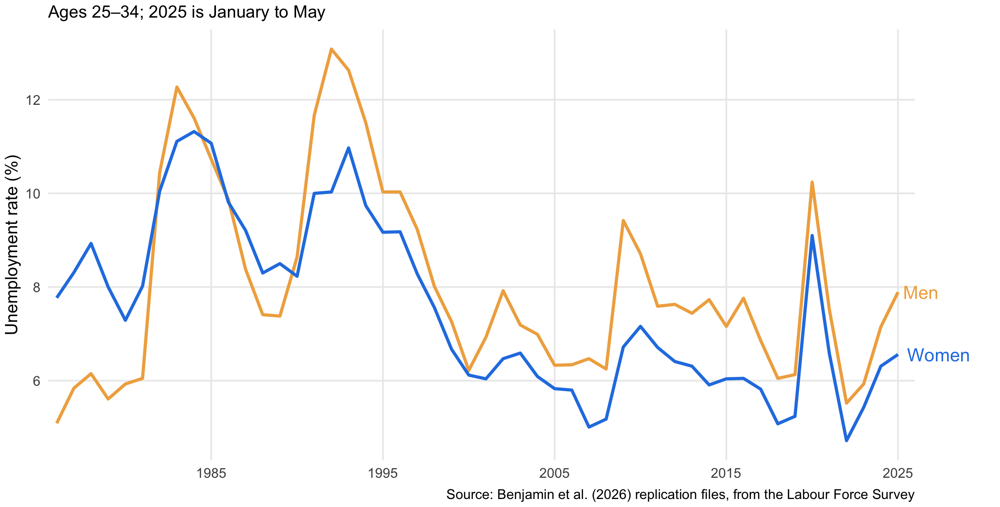
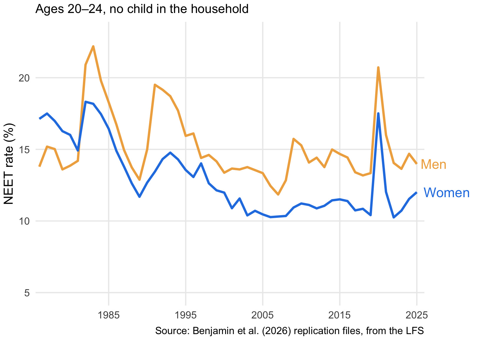
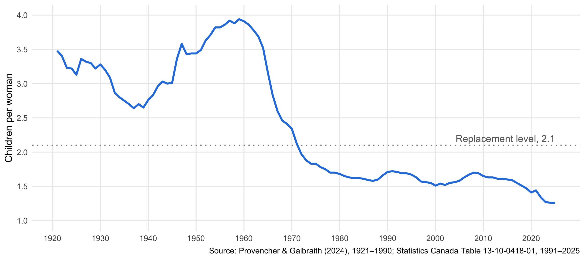
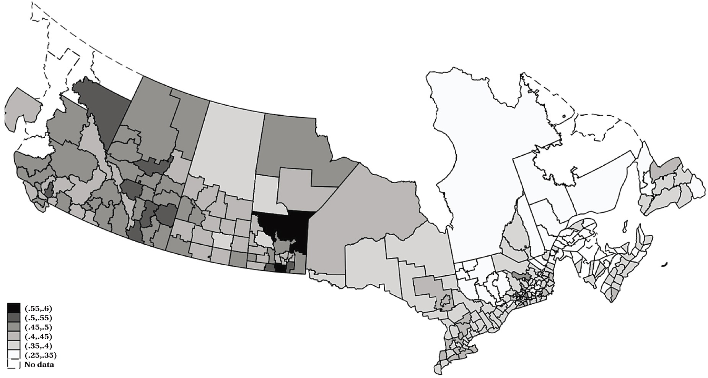
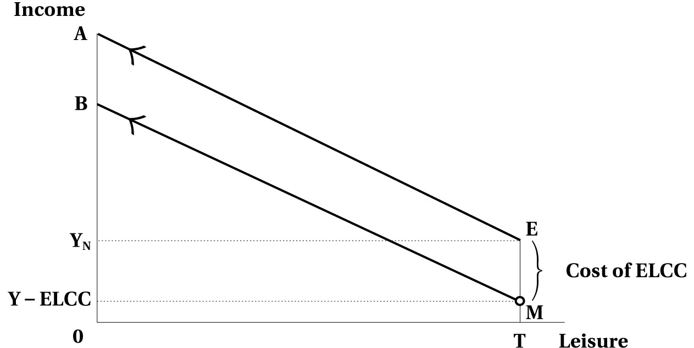
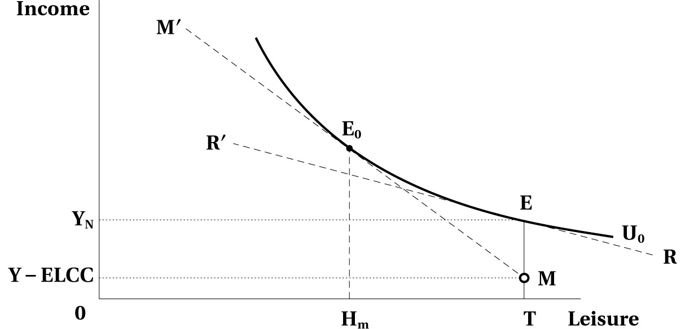
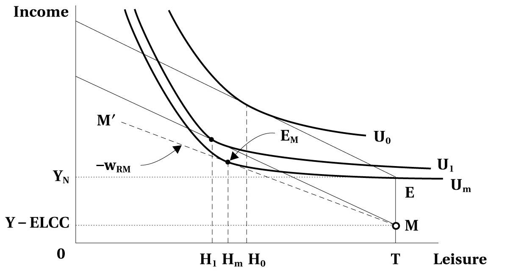
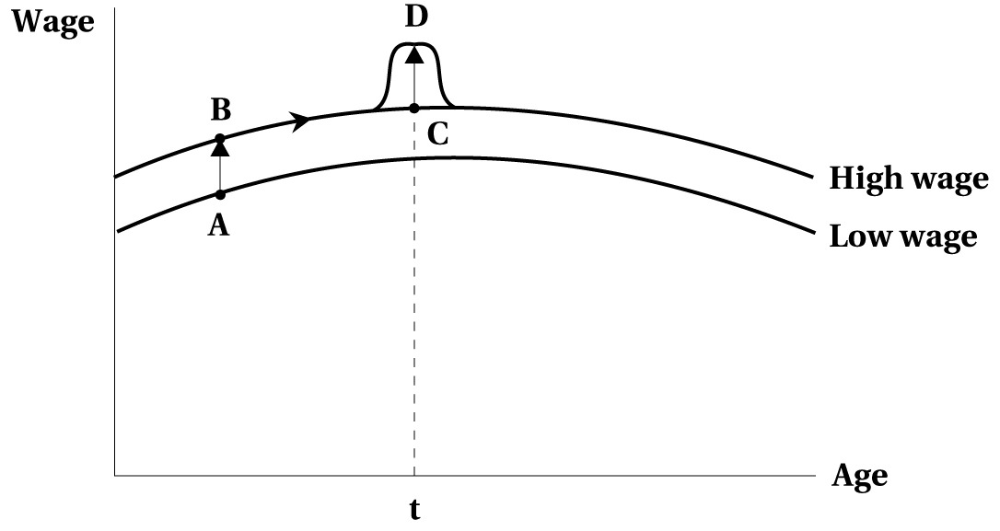

Labour Supply and Early Career Decisions
EC306- Wages and Employment
Justin Smith
Wilfrid Laurier University
Fall 2026

Goals of This Section
Goals of This Section
In this section we will:
- Explain why comparing people of different ages mixes up age effects and cohort effects
- Describe what new graduates face when they enter the labour market, especially in a recession
- Analyze how becoming a parent affects paid work, and how family leave and child care policy change the cost
- Use a life-cycle model to show why the response to a wage change depends on whether it is permanent, anticipated, or temporary
Characterizing Life-Cycle Labour Supply
Comparing People at Different Ages
- Compare the assets of 20-year-olds and 55-year-olds in 2026
- The 55-year-olds have far more
- Does that tell us who is better at saving? Not really
- One group is just starting to earn and save; the other has been at it for decades
- A single snapshot mixes two things: stage of life and generation
- Better: compare the generations at the same age
Key Definition
Life-cycle labour supply: how labour supply changes over a person’s lifetime, and how decisions made earlier in life shape it later
Age–Participation Profiles: Women
Each solid line follows one generation; the dashed line is all women in a single year

Age Effects and Cohort Effects
Key Definition
Cohort effect: a difference in behaviour that comes from belonging to a particular generation, born in the same years or entering the labour market at the same time, rather than from age itself
- In 2025, women aged 25–29 participate 61 points more than women aged 65–69
- The two groups differ in age and in generation, so the 61 points are age plus cohort
- Cohort effect: at 45, Gen X women (born 1976–80) participate about 5 points more than boomer women (born 1956–60) did at 45
- Age effect: following the boomer women from 45 to 65, participation falls about 58 points
- Separating the two means following cohorts over many years
- The LFS goes back only to 1976, which is why the early ages are missing for older cohorts; the Census goes back further
Age–Participation Profiles: Men
- Women participate less than men, particularly at 20–35, partly because of caregiving, which comes later in this section
- Later cohorts of men work longer: a change in the timing of retirement (Chapter 7)
- Recent cohorts of men participate less before 30
- At 20–24: 87% of the 1956–60 cohort, but 75% of the 1996–2000 cohort
- More of them are in school (Chapter 14)
Why Cohorts Differ
- Cohort effects matter most for understanding women’s labour supply
- Canada: Beaudry & Lemieux (1999), Dooley (1994); the United States: Goldin (1990, 2021)
- Economic variables alone can’t explain the shifts
- Social norms and gender role attitudes, including attitudes toward mothers working, shape each generation’s preferences and constraints (Fortin 2005; Lundberg 2025)
Goldin’s Insight
Claudia Goldin, 2023 Nobel Prize in economics (NobelPrize.org 2023): later-life outcomes are largely set by early decisions about education and first jobs. A change in norms or policy reaches the young first, so women’s participation changes slowly, one cohort at a time
Worked Example: Two Cohorts
| Observed in | 2000 | 2005 | 2010 |
|---|---|---|---|
| Born 1975 | |||
| Age | 25 | 30 | 35 |
| Participation rate | 75% | 80% | 85% |
| Born 1980 | |||
| Age | 20 | 25 | 30 |
| Participation rate | 75% | 80% | 85% |
- The truth: participation rises 1 point per year of age, or 5 points from 25 to 30, for both cohorts
- A researcher with only the 2005 data sees 80% at 25 and 80% at 30
- Conclusion: no change with age, which is wrong
- The younger cohort is 5 percentage points higher at every age: a cohort effect
- A third confounder is time effects
- If 2005 was a boom year, even repeated observations of a cohort would mix the boom with the effect of age
iClicker Question
In a 2025 survey, women aged 50–54 participate at 80% and women aged 55–59 at 70%. Suppose each cohort participates 4 points more than the cohort born five years before it, at every age, and there are no time effects. For a given cohort, how does participation change from 50–54 to 55–59?
A) Falls 10 points
B) Falls 14 points
C) Falls 4 points
D) Falls 6 points
E) Can’t be determined from a single year of data
Labour Market Entry
Early-Career Unemployment Follows the Business Cycle

Graduating in a Recession
- The first year is hard: you may find work, but probably not the job you wanted
- Oreopoulos, von Wachter & Heisz (2012): Canadian male college graduates, when unemployment at graduation is 5 points higher
- About 9% lower earnings at first, and still about half that 5 years on
- The scarring persists after people find work and switch jobs, and takes about 10 years to fade
- Messacar, Handler & Frenette (2021): looking ahead to the COVID-19 graduates
- Each extra point of unemployment at graduation means 1.5–4% lower earnings, on average
- More education reduces the scarring
iClicker Question
To measure scarring, researchers compare people who graduated when unemployment was high with people who graduated when it was low. Why is this more convincing than comparing graduates who were unemployed after graduating with graduates who weren’t?
A) Timing is mostly luck; who ends up unemployed partly reflects their own traits
B) There are more graduates in high-unemployment years, so the estimates are more precise
C) Unemployment rates are measured more accurately than whether a person was unemployed
D) Graduates who were unemployed can’t be followed in the data
E) It isn’t more convincing: both comparisons measure the same thing
Not in Employment, Education, or Training
Key Definition
NEET: the share of young people who are not employed and not in school or training

- Rises in every recession, like the unemployment rate
- Young men’s rate has been above young women’s since the early 1980s
- Layton, Latour & Wall (2025): when unemployment rises, young women are more likely to enrol in school, and young men are more likely to leave the labour force
Parenthood and Paid Work
Total Fertility in Canada, 1921–2025
Partner, home, children, and career are decided together, often in the same few years. Parenthood is one of the biggest of those decisions

Fertility as an Economic Decision
- Economists analyze the decision to have children with consumer demand theory (Becker 1960; Mincer 1963; Dahl & Løken 2024)
- The decision depends on market wages, the value of home production, how much parents want to invest in each child, and each partner’s bargaining power
- A full treatment would be dynamic: timing, spacing, future careers
- We stick to the factors that bear most on early-career labour supply
- Income: if children are like a normal good, more income means more children, other things equal
- Was the steep fall in the 1930s just the Depression cutting incomes?
- Hard to say: “other things equal” is hard to hold, so the pure income effect is hard to isolate
Key Definition
Total fertility rate: the number of children a woman would have over her lifetime if, at each age, she had children at that year’s birth rates
The Cost of Children
Key Definition
Child penalty: the fall in a parent’s earnings or employment after having a child, compared with what they would otherwise have earned
- Demand for children falls as their cost rises
- Direct costs: Phipps (1998): a couple earning $60,000 needs about $9,300 more a year to be as well off with a first child
- Time costs: raising children takes time that could go to paid work, so the biggest cost is forgone earnings
- Connolly, Fontaine & Haeck (2023): mothers’ earnings are 49% lower in the year of the birth and still 34% lower 10 years on; fathers’ barely change
Child Penalties Across Canada

Source: Benjamin et al. (2026), Figure 6.5, from Karademir et al. (2026)
- Mothers’ earnings penalty in the 5 years after a birth (Karademir, Laliberté & Staubli 2026)
- Shading: share of earnings lost, from 25–35% (white) to 55–60% (black)
- Largest in parts of the West, smallest in Quebec
- Much of it is career choices made around caregiving: shorter or flexible hours, training and promotions passed up (Olivetti, Pan & Petrongolo 2024)
Related Goods, Tastes, and Technology
- Related goods: child care, sports and activities, and postsecondary education are complements to children
- Cheaper complements, say from public subsidies, could mean larger families; European expansions of child care for very young children raised fertility (Olivetti et al. 2024)
- Tastes: norms constrain choices and shape preferences, and they pass from one generation to the next (Fernández & Fogli 2009)
- They also respond to the economy: as more women work for pay, attitudes toward motherhood change
- Technology: contraception, sterilization, and infertility treatment bring actual births closer to desired births
- Lower infant mortality means fewer births for the same family size
The Pill and Women’s Careers
- The pill was approved in the US in 1960 and quickly used by married women to limit births
- Single women under 21 often couldn’t get it
- Goldin & Katz (2002): as states lowered the age of majority, state by state, young single women gained access
- Where they did, more women entered professional programs like law and medicine, and married later
- Two channels:
- An unplanned pregnancy was less likely to derail a long education
- Delaying marriage became less costly: with more women delaying, the pool of potential partners was still there a few years later
- Bailey (2006): in the US, early access delayed first births and permanently raised women’s labour supply: the kind of cohort effect seen in Figure 6.1
iClicker Question
In a couple where the mother does most of the child care, which change is more likely to lead them to have more children?
A) A raise for the mother, because it adds more to family income
B) An equal raise for the father, since it adds income but little time cost
C) Either raise, equally, because family income rises by the same amount
D) Neither, because a higher wage always means fewer children
E) Neither, because both raises make the parents’ time more expensive
Maternity and Parental Leave
Job-protected leave
- Set by each province, so the details vary
- Maternity leave: for those who are pregnant or have just given birth
- Parental leave: for any parent caring for a newborn or newly adopted child
- Ontario: 17 weeks of maternity leave and 61 of parental leave, after 13 weeks with the employer
- The employer doesn’t have to pay wages during the leave
Benefits while on leave
- Quebec: the Quebec Parental Insurance Plan
- Rest of Canada: EI maternity and parental benefits (Chapter 5)
- 600 hours of insured work in the year before the claim
- Up to 55% of earnings
- Can be spread over up to 18 months, at a lower rate
- Provisions for parents taking leave at the same time
Leave and the Cost of a Child
- Job protection makes returning to work after a birth more rewarding, so early-career work pays off more
- Baker & Milligan (2008): Canada’s introduction and expansion of job-protected leave
- Leaves of 17–18 weeks didn’t increase mothers’ time at home, but fewer quit and more returned to their pre-birth employer
- Longer leaves, up to 70 weeks, did increase time at home, along with job continuity
- Paid benefits soften the income loss in the months after a birth, which encourages longer leaves
- Very long leaves may slow career advancement (Dahl & Løken 2024)
- Leave policy also changes the payoff to education and training done before becoming a parent (Chapter 14)
Early Learning and Child Care
Key Definitions
Early learning and child care (ELCC): care and early education for young children outside the home, such as daycare centres and preschools
Child care subsidies: public payments that lower what parents pay for ELCC
Fixed cost of working: a cost paid only if you work, the same however many hours you work
- On the agenda for decades: the 1970 Royal Commission on the Status of Women recommended them
- Since 2021, federal agreements with the provinces and territories have aimed to bring average fees to $10 a day by March 2026
- In the static model, ELCC is a fixed cost of working
ELCC Costs and the Budget Constraint

Source: Benjamin et al. (2026), Figure 6.6(a)
- Without ELCC costs: AE. With them: EMB, since working costs EM
- A parent who doesn’t work stays at E; one who works any hours at all is on MB
ELCC Costs and Participation

Source: Benjamin et al. (2026), Figure 6.6(b)
- The reservation wage rises from the slope of RR′ to the slope of MM′, where working at E0 is as good as staying home at E
- This parent’s wage is above the slope of RR′ but below MM′: without the cost they would work; with it they stay home
Work Incentive Effect
Fixed costs raise the reservation wage, so participation falls
ELCC Costs and Hours

Source: Benjamin et al. (2026), Figure 6.6(c)
- A parent whose wage is above the reservation wage still works
- Paying for ELCC is like losing nonlabour income: the constraint shifts down by EM in parallel
- A pure income effect: with leisure a normal good, leisure falls from H0 to H1, so hours of work rise
- The gap: at the reservation wage, the slope of M′M, working T − Hm hours at EM is only as good as staying home at E
- Fewer hours can’t cover the fixed cost, so fixed costs discourage part-time work
iClicker Question
A parent can earn $25 an hour. Child care costs $100 a day if they work at all, however many hours they work. Ignoring taxes, which statement is correct?
A) If they work at all, they will work more than 4 hours a day
B) They will never choose to work more than 4 hours a day
C) If they work, they will work exactly 4 hours a day
D) The cost doesn’t affect their hours, since it doesn’t depend on hours
E) If they keep working, they will work fewer hours than before the cost
What a Child Care Subsidy Does
The simplest case: free public ELCC removes the fixed cost entirely (ignoring the taxes that pay for it)
- Parents not working: the reservation wage falls, so some start working
- Part-time work becomes worthwhile, since a few hours no longer have to cover the cost
- Parents already working: none quit, since their reservation wage was already below their wage
- But the subsidy acts like a demogrant (Chapter 4): a pure income effect, so they work fewer hours
- For a subsidy that doesn’t depend on hours, the effect on total hours is ambiguous
- Offer the subsidy only to parents not yet working and total hours must rise, but similar families get treated differently
Quebec’s $5-a-Day Child Care
- From 1997, Quebec subsidized child care centres so parents paid $5 a day; most had charged over $20
- Baker, Gruber & Milligan (2008): Quebec against the other provinces, before and after
- Employment of mothers in two-parent families with a child aged 0–4: up 7.7 percentage points
- Stalker & Ornstein (2013): Census data to 2006 confirm the rise in women’s participation
- Karademir, Laliberté & Staubli (2026): mothers’ employment up about 4 points; the long-run earnings penalty about 8% smaller; grandmothers’ work changed too
Assignment 1
You compared Quebec with the rest of Canada in a single year, 2019. These studies compare before and after the program, a more convincing test of cause and effect
iClicker Question
Quebec’s low-fee child care raised the employment of mothers of young children by 7.7 percentage points. What does the model say about the total hours these mothers worked?
A) They must have risen, since more mothers were working
B) Can’t tell from this: mothers already working may have cut their hours
C) They must have fallen, because the subsidy works like a demogrant
D) They rose by 7.7 percent
E) They rose for mothers already working too, because child care became cheaper
Dynamic Life-Cycle Models
A Lifetime Model of Labour Supply
- The static model of Chapter 3 looks at one period at a time
- Here a person lives and can work for \(N\) periods, with no uncertainty about the future
- Utility depends on consumption and leisure in every period:
\[ u = U(C_1, C_2, \ldots, C_N, L_1, L_2, \ldots, L_N) \tag{6.1} \]
- No nonlabour income, a consumption price fixed at 1, and known wages \(w_1, w_2, \ldots, w_N\)
- From here on, two periods (this year and next), with hours \(H_1\) and \(H_2\)
Key Definition
Dynamic labour supply: labour supply planned over many periods at once, so hours in each period depend on the wages in every period
The Lifetime Budget Constraint
- A first guess: lifetime consumption equals lifetime earnings
\[ C_1 + C_2 = w_1H_1 + w_2H_2 \tag{6.2} \]
- That means borrowing next year’s pay for free. No bank allows it
- With borrowing and saving at interest rate \(r\), present values must balance:
\[ C_1 + \frac{C_2}{1+r} = w_1H_1 + \frac{w_2H_2}{1+r} \tag{6.3} \]
Key Definition
Present value: what a future amount is worth today; at interest rate \(r\), $1 next year is worth \(\frac{1}{1+r}\) today
iClicker Question
You will earn $30,000 this year and $33,000 next year, and you can borrow or save at 10%. What is the present value of your lifetime earnings?
A) $63,000
B) $66,000
C) $57,273
D) $60,273
E) $60,000
Saving, Borrowing, and Full Income
- A saver consumes next year’s earnings plus this year’s savings with interest:
\[ C_2 = w_2H_2 + (1+r)(w_1H_1 - C_1) \tag{6.4} \]
- A borrower consumes next year’s earnings minus the loan with interest:
\[ C_2 = w_2H_2 - (1+r)(C_1 - w_1H_1) \tag{6.5} \]
- Both are rearrangements of (6.3). Using \(H_t = T - L_t\):
\[ C_1 + \frac{C_2}{1+r} + w_1L_1 + \frac{w_2L_2}{1+r} = w_1T + \frac{w_2T}{1+r} \tag{6.6} \]
- The right side is the present value of the lifetime labour endowment; leisure in period \(t\) costs \(w_t\)
- Labour supply in each period depends on every period’s wage, \(r\), and lifetime resources (MaCurdy 1981)
Three Kinds of Wage Change

Source: Benjamin et al. (2026), Figure 6.7
Key Definitions
- A → B: a permanent, unanticipated difference, a higher wage at every age
- B → C: an evolutionary wage change, wages rising with age along a profile known in advance
- C → D: a transitory, unanticipated increase, a one-time blip at age \(t\), like overtime that won’t be repeated
- All three are assumed to be the same size, so only the kind of change differs
Why the Responses Differ
| Wage change | Income effect | Substitution effect | Labour supply response |
|---|---|---|---|
| B → C, evolutionary | None: an anticipated raise is no news | Work more where wages peak | Largest |
| C → D, transitory | Small, spread over the whole life | Work more at age \(t\) | Middle |
| A → B, permanent | Large: lifetime income rises | Work more at every age | Smallest, possibly negative |
Key Definition
Intertemporal substitution: shifting work toward the periods when it pays the most, and leisure toward the periods when it is cheapest
iClicker Question
Each change below raises your wage by $3 an hour this year. According to the life-cycle model, which one raises your hours this year the most?
A) An unexpected permanent raise, effective now and for the rest of your career
B) An unexpected one-year bonus rate, after which your wage goes back to normal
C) A raise you’ve long known was coming, from your firm’s pay scale
D) All three equally, since this year’s wage rises by $3 in each case
E) None of them: a higher wage always lowers hours through the income effect
How Well Does the Model Work?
- In theory, an important step beyond the static model
- Income and substitution effects depend on whether a wage change is permanent or temporary, and anticipated or not
- In practice, its record is disappointing when it is asked to explain things like year-to-year swings in employment across the economy (Card 1994)
- Still, it tells us what to ask about any wage or tax change: is it news, and will it last?
Summary
Summary
Life-cycle labour supply:
- Participation follows an inverted U with age; a single-year snapshot mixes age effects with cohort effects, which matter most for women
Labour market entry:
- Young people’s unemployment and NEET rates rise and fall with the business cycle; graduating in a recession leaves scars that fade slowly
Parenthood and paid work:
- The largest cost of having children is mothers’ forgone earnings
- Family leave and ELCC subsidies lower that cost; subsidies raise participation but can cut the hours of parents already working
Dynamic life-cycle models:
- With a lifetime budget constraint, the response to a wage change depends on whether it is permanent, anticipated, or temporary
References
- Bailey, M. J. (2006). More power to the pill: The impact of contraceptive freedom on women’s life cycle labor supply. Quarterly Journal of Economics, 121(1), 289–320.
- Baker, M., Gruber, J., & Milligan, K. (2008). Universal child care, maternal labor supply, and family well-being. Journal of Political Economy, 116(4), 709–745.
- Baker, M., & Milligan, K. (2008). How does job-protected maternity leave affect mothers’ employment? Journal of Labor Economics, 26(4), 655–691.
- Beaudry, P., & Lemieux, T. (1999). Evolution of the female labour force participation rate in Canada, 1976–1994: A cohort analysis. Canadian Business Economics, 7, 57–70.
- Becker, G. S. (1960). An economic analysis of fertility. In Demographic and economic change in developed countries. Princeton University Press.
- Benjamin, D., Foley, K., Gunderson, M., Lemieux, T., Schirle, T., & Skuterud, M. (2026). Labour Market Economics, 2026 Release. McGraw Hill. Chapter 6, figure bank, and replication files.
References (cont.)
- Card, D. (1994). Intertemporal labour supply: An assessment. In C. A. Sims (Ed.), Advances in econometrics: Sixth World Congress. Cambridge University Press.
- Connolly, M., Fontaine, M., & Haeck, C. (2023). Child penalties in Canada. Canadian Public Policy, 49(4), 399–420.
- Dahl, G. B., & Løken, K. V. (2024). Families, public policies, and the labor market. In C. Dustmann & T. Lemieux (Eds.), Handbook of labor economics (Vol. 5, pp. 581–618). Elsevier.
- Dooley, M. D. (1994). The converging market work patterns of married mothers and lone mothers in Canada. Journal of Human Resources, 29(2), 600–620.
- Fernández, R., & Fogli, A. (2009). Culture: An empirical investigation of beliefs, work, and fertility. American Economic Journal: Macroeconomics, 1(1), 146–177.
- Fortin, N. M. (2005). Gender role attitudes and the labour-market outcomes of women across OECD countries. Oxford Review of Economic Policy, 21(3), 416–438.
References (cont.)
- Goldin, C. (1990). Understanding the gender gap: An economic history of American women. Oxford University Press.
- Goldin, C. (2021). Career and family: Women’s century-long journey toward equity. Princeton University Press.
- Goldin, C., & Katz, L. F. (2002). The power of the pill: Oral contraceptives and women’s career and marriage decisions. Journal of Political Economy, 110(4), 730–770.
- Karademir, S., Laliberté, J.-W., & Staubli, S. (2026). The multigenerational impact of children and childcare policies. Journal of Labor Economics, 44(1), 189–227. https://doi.org/10.1086/732358
- Layton, J., Latour, G., & Wall, K. (2025). Youth not in employment, education or training: Recent trends. Education, Learning and Training: Research Paper Series, Statistics Canada Catalogue no. 81-595-M.
- Lundberg, S. (2025). The economics of gender norms. Scottish Journal of Political Economy, 72(2). https://doi.org/10.1111/sjpe.12407
References (cont.)
- MaCurdy, T. E. (1981). An empirical model of labor supply in a life-cycle setting. Journal of Political Economy, 89(6), 1059–1085.
- Messacar, D., Handler, T., & Frenette, M. (2021). Predicted earnings losses from graduating during COVID-19. Canadian Public Policy, 47(2), 301–315.
- Mincer, J. (1963). Market prices, opportunity costs, and income effects. In C. Christ et al. (Eds.), Measurement in economics: Studies in mathematical economics and econometrics in memory of Yehuda Grunfeld. Stanford University Press.
- NobelPrize.org. (2023, October 9). Press release: The Prize in Economic Sciences 2023. https://www.nobelprize.org/prizes/economic-sciences/2023/press-release/
- Olivetti, C., Pan, J., & Petrongolo, B. (2024). The evolution of gender in the labor market. In C. Dustmann & T. Lemieux (Eds.), Handbook of labor economics (Vol. 5, pp. 619–677). Elsevier.
- Oreopoulos, P., von Wachter, T., & Heisz, A. (2012). The short- and long-term career effects of graduating in a recession. American Economic Journal: Applied Economics, 4(1), 1–29.
References (cont.)
- Phipps, S. (1998). What is the income “cost of a child”? Exact equivalence scales for Canadian two-parent families. Review of Economics and Statistics, 80(1), 157–164.
- Provencher, C., & Galbraith, N. (2024). Fertility in Canada, 1921 to 2022. Statistics Canada Catalogue no. 91F0015M2024001.
- Royal Commission on the Status of Women in Canada. (1970). Report of the Royal Commission on the Status of Women in Canada. Information Canada. https://www.publications.gc.ca/site/eng/9.699583/publication.html
- Stalker, G., & Ornstein, M. (2013). Quebec, daycare, and the household strategies of couples with young children. Canadian Public Policy, 39(2), 241–262.
- Statistics Canada. Table 13-10-0418-01, Crude birth rate, age-specific fertility rates and total fertility rate (live births).
- Statistics Canada. Labour Force Survey public use microdata files, 1976–2025, as tabulated in the Benjamin et al. (2026) replication files.